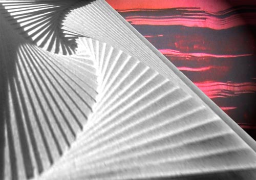

Details
Vernissage: 12. März 2004
Eröffnung: Dr. Eugen Maria Schulak
Die Ausstellung war bis 27. Mai 2004 zu besichtigen.

Vernissage: 12. März 2004
Eröffnung: Dr. Eugen Maria Schulak
Die Ausstellung war bis 27. Mai 2004 zu besichtigen.